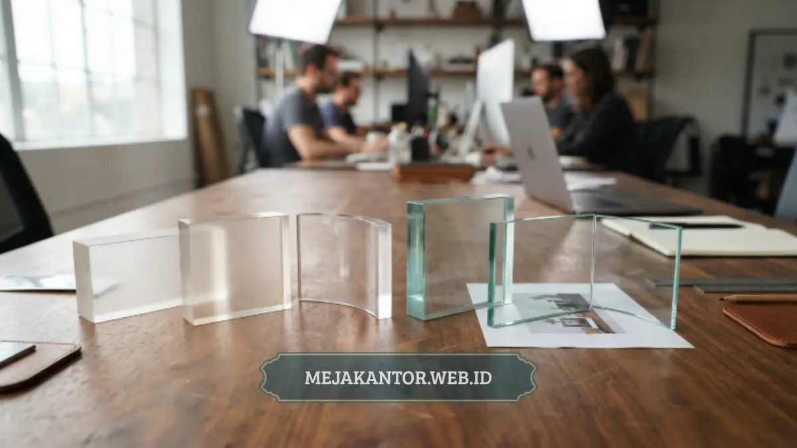

Partisi akrilik lebih ringan, lebih tahan benturan, dan lebih aman dibanding partisi kaca dengan ketebalan setara, sementara partisi kaca unggul dari sisi kesan premium dan ketahanan terhadap goresan permukaan. Pemilihan antara akrilik dan kaca sebaiknya disesuaikan dengan kebutuhan keamanan, bobot struktur meja, dan anggaran pengadaan workstation kantor Anda.
- Akrilik lebih ringan sehingga instalasi lebih cepat dan beban pada meja lebih kecil.
- Akrilik tidak pecah menjadi serpihan tajam saat terkena benturan, berbeda dengan kaca.
- Kaca lebih tahan terhadap goresan permukaan dibanding akrilik.
- Akrilik umumnya lebih ekonomis dibanding kaca pada ketebalan yang setara.
- Kedua material sama-sama mudah dibersihkan dengan cairan pembersih yang sesuai.
Apa Perbedaan Utama Partisi Akrilik dan Kaca
Perbedaan paling mendasar antara akrilik dan kaca terletak pada bobot dan sifat material saat pecah. Akrilik merupakan material plastik transparan yang jauh lebih ringan dibanding kaca pada ketebalan yang sama, sehingga lebih mudah dipasang pada struktur meja tanpa memerlukan penopang tambahan yang berat.
Dari sisi karakteristik saat terkena benturan, kaca cenderung pecah menjadi serpihan tajam yang berpotensi menimbulkan risiko cedera, sedangkan akrilik lebih bersifat retak atau penyok tanpa menghasilkan pecahan tajam yang membahayakan penggunanya.
Mana yang Lebih Aman antara Akrilik dan Kaca
Dari sisi keamanan penggunaan sehari-hari di ruang kerja, akrilik umumnya dianggap lebih aman dibanding kaca karena sifatnya yang tidak mudah pecah menjadi serpihan tajam. Karakteristik ini penting terutama pada ruang kerja dengan mobilitas staff yang tinggi, di mana risiko benturan tidak jarang terjadi selama aktivitas kerja berlangsung.
Kaca tetap dapat digunakan pada area dengan mobilitas rendah dan kebutuhan tampilan premium, namun perlu mempertimbangkan jenis kaca yang digunakan, misalnya kaca tempered yang dirancang untuk mengurangi risiko pecahan tajam.
Mana yang Lebih Ringan untuk Struktur Meja Workstation
Bobot material menjadi pertimbangan penting saat partisi dipasang pada meja staff yang sudah ada, terutama bila struktur meja tidak dirancang untuk menahan beban tambahan yang berat. Akrilik dengan bobot yang lebih ringan memberi fleksibilitas lebih besar dalam pemasangan pada berbagai jenis meja, termasuk meja dengan rangka standar.
Kaca dengan ketebalan yang memadai untuk keamanan cenderung memiliki bobot lebih besar, sehingga pemasangannya perlu mempertimbangkan kekuatan struktur meja dan sistem braket penyangga yang digunakan.

Bagaimana Perbandingan dari Sisi Ketahanan Permukaan
Kaca memiliki keunggulan pada ketahanan terhadap goresan permukaan dibanding akrilik, sehingga tampilan kaca cenderung lebih tahan lama terlihat mulus meski sering dibersihkan dengan berbagai jenis lap. Akrilik lebih rentan tergores bila dibersihkan dengan bahan yang kasar, sehingga memerlukan perhatian lebih saat proses perawatan permukaan.
Meski demikian, goresan halus pada permukaan akrilik umumnya tidak terlalu memengaruhi fungsi utama partisi sebagai pembatas visual, selama tidak mengganggu tingkat transparansi secara signifikan.
Mana yang Lebih Ekonomis untuk Pengadaan Workstation
Secara umum, akrilik cenderung lebih ekonomis dibanding kaca pada ketebalan dan ukuran yang setara, terutama untuk kebutuhan pengadaan dalam jumlah besar seperti proyek kantor atau instansi. Faktor produksi dan pemasangan yang lebih sederhana pada akrilik turut memengaruhi efisiensi biaya secara keseluruhan.
Kaca dengan spesifikasi keamanan tinggi seperti tempered glass umumnya memerlukan biaya produksi yang lebih besar, sehingga lebih sering dipilih untuk area tertentu yang mengutamakan kesan premium dibanding efisiensi anggaran.
Bagaimana Perbandingan dari Sisi Estetika Ruang Kerja
Kaca sering diasosiasikan dengan kesan premium dan elegan karena permukaannya yang sangat jernih dan bebas dari efek kabur, sehingga banyak dipilih untuk ruang kerja eksekutif atau area yang sering dikunjungi tamu penting. Akrilik juga mampu menghadirkan tampilan bening yang serupa, meski pada pengamatan jarak sangat dekat kejernihannya sedikit berbeda dibanding kaca berkualitas tinggi.
Untuk kebutuhan estetika ruang kerja staff sehari-hari, perbedaan kejernihan ini umumnya tidak terlalu signifikan secara visual, sehingga akrilik tetap menjadi pilihan yang relevan tanpa mengorbankan tampilan profesional ruang kerja secara keseluruhan.
Material Mana yang Lebih Cocok untuk Ruang dengan Mobilitas Tinggi
Ruang kerja dengan mobilitas staff yang tinggi, seperti area customer service atau ruang kerja bersama dengan lalu lintas orang yang padat, lebih sesuai menggunakan partisi akrilik karena risiko benturan lebih sering terjadi pada area tersebut. Sifat akrilik yang tidak mudah pecah menjadi serpihan tajam memberi rasa aman lebih besar dibanding kaca pada kondisi mobilitas tinggi.
Kaca lebih sesuai digunakan pada area dengan mobilitas rendah dan kebutuhan tampilan premium yang lebih diutamakan dibanding faktor mobilitas, seperti ruang kerja eksekutif atau ruang rapat kecil dengan penggunaan yang lebih terbatas.
Baik akrilik maupun kaca memiliki keunggulan masing-masing tergantung kebutuhan ruang kerja Anda. Akrilik unggul dari sisi keamanan, bobot ringan, dan efisiensi biaya, sementara kaca unggul dari sisi ketahanan permukaan dan kesan premium pada ruang kerja tertentu.
Jika Anda membutuhkan partisi workstation dengan keseimbangan antara keamanan, efisiensi biaya, dan kemudahan instalasi, partisi workstation PWS-Akrilik dari mejakantor.web.id dapat menjadi pilihan yang sesuai. Konsultasikan kebutuhan material partisi Anda bersama tim mejakantor.web.id sekarang.

Mega Anggun
Penulis Konten & Spesialis Penataan Interior Kantor. Berpengalaman dalam memberikan tips ergonomi dan memilih furnitur terbaik untuk menunjang produktivitas kerja.